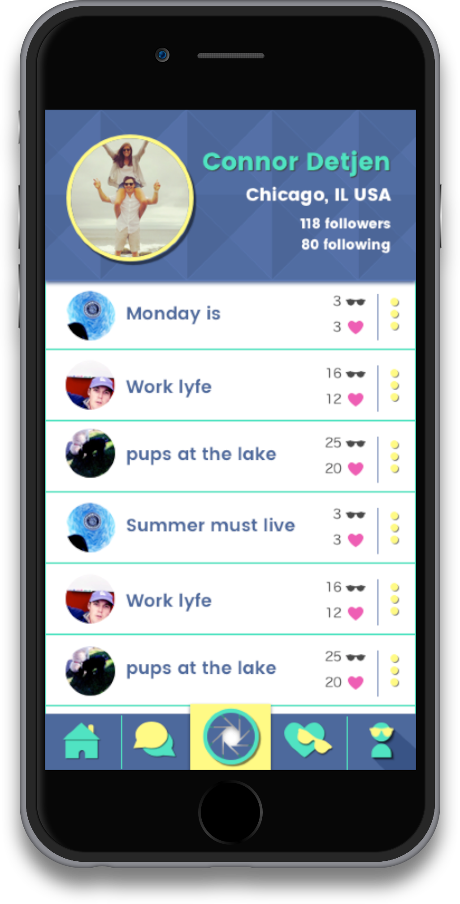
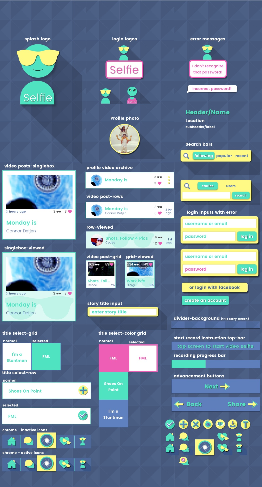

Style Tiles
Final Style Tile
After seeing all my style explorations, the owner liked the directions both clean and sleek, but also the fun flat design. In my final style tile and direction, I wanted to combine both styles that would really speak back to his original branding of 'smart, but approachable'.

Typography
I chose a heavy sans serif fonts to make the text look young and fun. The weight of the font gives the text a "cartoonish" look and helps give the app a game-like feel.
UI Kit
One of the final deliverables was a UI kit handed to the Selfie guys along with 1x, 2x retina, and 3x retinaHD assets and screen designs.

Alternate layouts
I wanted to explore alternate layouts for some of the screens. I designed both a 3 column grid and single box view along with the current row layout. I conduted a quick preference test for the home layout to consider readability and discoverablility. --Test Results--
Another screen I provided alternate layouts for is the title story screen as part of their video share flow. I created two grid color designs to offer the title the users stories more fun.